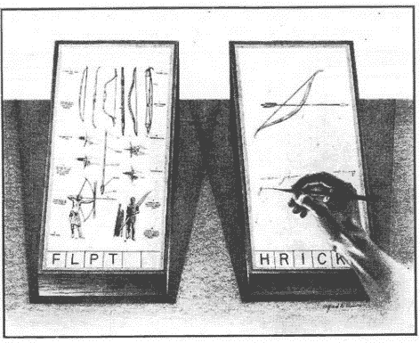

MEMEX
consider a future device, a sort of mechanized private library in which an individual stores all his books, records, and communications, and which may be consulted with exceeding speed and flexibility. it is an enlarged intimate supplement to his memoryVannevar Bush
